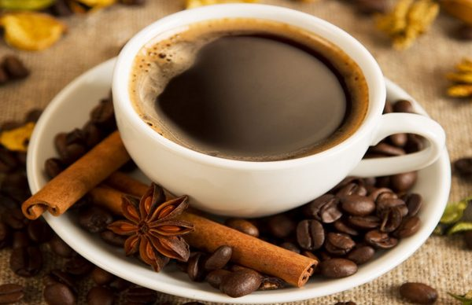

Cà Phê ARABICA - Thưởng thức sành điệu
Cà phê Arabica ưa sống ở vùng núi cao. Arabica thường được trồng ở độ cao từ 1000-1500 m. Cây có tán lớn, màu xanh đậm, lá hình oval. Cây cà phê trưởng thành có thể cao từ 4-6 m, nếu để mọc hoang dã có thể cao đến 15 m. Quả hình bầu dục, mỗi quả chứa hai hạt. Arabica có giá trị kinh tế nhất trong số các loài cây cà phê.

Trên thị trường cà phê Arabica luôn được đánh giá cao hơn vì có hương vị thơm ngon. Giá cà phê Arabica thường cao hơn gấp đôi so với giá Robusta. Cà phê Aarabica đại diện cho khoảng gần 70% các sản phẩm cà phê cao cấp trên thế giới. Arabica có nguồn gốc từ vùng cao nguyên nhiệt đới Ethiopia, đông Phi.
Brasil và Colombia là hai nước xuất khẩu chính loại cà phê này, chất lượng cà phê của họ cũng được đánh giá cao nhất. Ở Việt Nam,Tỉnh Lâm đồng với các địa phương như Di Linh, bảo Lộc, Đơn Dương, vùng ngoại ô Đà Lạt, được coi là thiên đường cà phê Arabica của Việt Nam với những “chỉ số vàng”, cao 1.500 m, khí hậu ôn đới mát quanh năm, nhiệt độ cực đại trong năm không vượt quá 33 độ, nhiệt độ cực tiểu 5 độ. Đây là vùng sản xuất cà phê Arabica chất lượng cao nhất cả nước. Địa hình càng cao, khí hâu càng lạnh hơn, càng cho ra những hạt cà phê Arabica chất lượng tuyệt hảo.
Arabica có vị chua thanh xen lẫn với vị đắng nhẹ, màu nước nâu nhạt, trong trẻo của hổ phách. Mùi hương của Arabica rất thanh tao, quí phái, Arabica có mùi của si-rô, mùi của hoa trái, hòa quyện với mùi của mật ong, và cà mùi bánh mì nướng, mùi của cánh đồng rơm buổi trưa hè... Arabica chinh phục những con người sành điệu ẩm thực nhất trên thế giới. Cà phê Arabica là nguyên liệu chính của các hảng cà phê, các thương hiệu cà phê nổi tiếng nhất trên thế giới.
Đáng tiếc thay, do không có đủ thông tin và nhận thức về cà phê cao cấp, hầu hết người Việt nam không nghĩ ràng cà phê có vị chua. Nhiều người Việt còn cho rằng cà phê là chỉ có đắng chứ không thể chua. Vị chua thanh xen lẫn đắng dịu cùng với mùi thơm ngây ngất, tao nhã của Arabica là một món quà quí giá Trời ban cho nhưng ai sành điệu cà phê, hương vị độc đáo nầy đánh thức niềm đam mê mãnh liệt của cả nhân loại uống cà phê. Arabica với phong vị quyến rũ, dịu dàng như 1 cô gái đại diện cho cực âm, cho phái đẹp, cho nữ tính. Arabica -niềm đam mê cao quí của người sành điệu nhất trên đời.